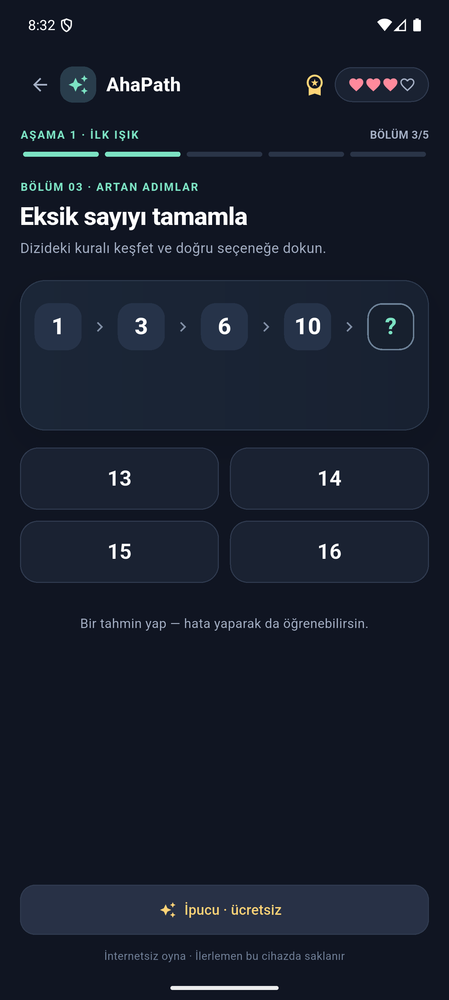

İlerledikçe
zorlaşan yol.
50 aşama boyunca yeni bulmaca türleri ve giderek büyüyen örüntülerle karşılaş.
0150
QAcrew Game Studio / Mobil oyun geliştirme
Örüntüleri fark et. Mantığını kur. Yolunu aç.
AhaPath, sayı ve şekil dizilerinden farklı mantık kurallarına uzanan çevrimdışı bir bulmaca oyunu. Her aşama yeni bir fikir, her doğru cevap yeni bir “aha!” anı.

Sayılar, şekiller, yönler ve gizli kurallar… AhaPath’te her bölüm küçük bir keşif. Başlangıçta örüntüyü tanırsın; ilerledikçe yeni kuralları bir araya getirirsin.
Her bölüm tek bir soruyla başlar. Örüntüyü keşfet, seçeneklerden cevabını seç ve yeni bir kurala doğru ilerle.
Eksik sayıyı tamamla
50 aşama boyunca yeni bulmaca türleri ve giderek büyüyen örüntülerle karşılaş.
İnternet bağlantısı olmadan oyna. İlerlemen cihazında saklanır.
Türkçe ve İngilizceden İspanyolcaya, Çinceye uzanan 8 dil seçeneği.
İlk aşamalarda örüntüleri tanı. İlerledikçe birden fazla kuralı birlikte çöz ve sıradaki aşamaların kilidini aç.
Sayı ve şekillerle mantık kurmaya başla.
İLK ADIMLARFarklı örüntüleri bir arada takip et.
KEŞİF DERİNLEŞİR250 bulmacalık yolun son aşamalarına ilerle.
YOLCULUK SÜRÜYORAhaPath sekiz dil seçeneğiyle geliyor. Oyun çevrimdışı oynanır; ilerlemen cihazında saklanır.
AhaPath’in mevcut mobil sürümünden gerçek ekranlar.
AhaPath’i geliştirirken nelerin değiştiğini buradan paylaşacağım.
Aşama kartlarından doğrudan o aşamanın beş bölümüne geçiş eklendi. Kilitli aşamalar ilerleme sırasını koruyor; aşama adları da ilerledikçe değişen bulmaca türlerini yansıtıyor. Güncel, normal ilerleme sürümü iOS simülatöründe ve Android emülatöründe açıldı.
Sıradaki durak? Bulmaca içerik incelemesi, oyun akışı ve mağaza hazırlıkları. Yeni gelişmeleri bu günlükte paylaşacağım.
DEVAM EDİYORAhaPath’in gelişimini buradan takip et. Yeni bir keşif ekledikçe bu sayfaya not düşeceğim.
Geliştirme notlarına git ↑